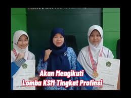

Apresiasi Kemenag Kota Bandung
Alhamdulillah, Jumat, 17 September 2021, bertempat di Aula Utama Kemenag Kota Bandung, dua siswi terbaik MTsN 1 Kota Bandung mendapatkan apresiasi berupa medali dan piagam penghargaan dari Kepala Kemenag Kota Bandung, Drs. Tedi Ahmad Junaedi, M. Si yang disaksikan oleh Bapak Kepala Madrasah MTsN 1 Kota Bandung, Drs. Tendi Setiadi, M,M,Pd karena keberhasilannya sebagai Juara 1 IPA dan IPS Terintegrasi pada Kompetisi Sains Madrasah (KSM) Tingkat Kota Bandung.
Semoga apresiasi ini menjadi motivasi bagi Viona dan Nafisha khususnya dan bagi Tim KSM Kota Bandung pada umumnya agar berhasil menjuarai KSM Tingkat Provinsi Jawa barat dan lolos sampai tingkat nasional. Aamiin yra.